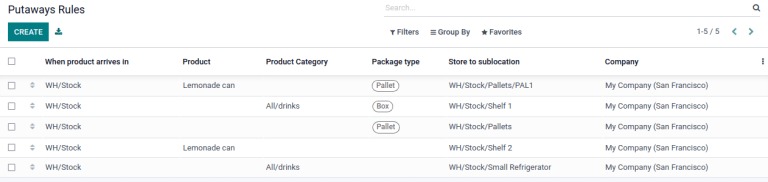

Putaway rules¶
Putaway is the process of routing products to appropriate storage locations upon shipment arrival.
Odoo can accomplish this seamlessly using putaway rules, which dictate how products move through specified warehouse locations.
Upon shipment arrival, operations are generated based on putaway rules to efficiently move products to specified locations, and ensure easy retrieval for future delivery orders.
In warehouses that process specific kinds of products, putaway rules can also prevent volatile substances from being stored in close proximity, by directing them to different locations determined by the warehouse manager.
See also
Configuration¶
To use putaway rules, navigate to , and activate the Multi-Step Routes feature under the Warehouse section. By doing so, the Storage Locations feature is also automatically activated.
Finally, click Save.

Define putaway rule¶
To manage where specific products are routed for storage, navigate to . Use the Create button to configure a new putaway rule on a Product or Product Category that the rule affects.
Important
Putaway rules can be defined either per product/product category, and/or package type (the Packages setting must be enabled in for that).
In the same line, the When product arrives in location is where the putaway rule is triggered to create an operation to move the product to the Store to location.
For this to work, the Store to location must be a sub-location of the first (e.g.,
WH/Stock/Fruits is a specific, named location inside WH/Stock to make the products stored here
easier to find).
Example
In a warehouse location, WH/Stock, there are the following sub-locations:
WH/Stock/Fruits
WH/Stock/Vegetables
Ensure all apples are stored in the fruits section by filling the field Store to with
the location WH/Stock/Fruits when the Product, Apple arrives in WH/Stock.
Repeat this for all products and hit Save.
Putaway rule priority¶
Odoo selects a putaway rule based on the following priority list (from highest to lowest) until a match is found:
Package type and product
Package type and product category
Package type
Product
Product category
Example
The product
Lemonade canhas the following putaway rules configured:
When receiving a
Pallet(Package Type) ofLemonade cans, it is redirected toWH/Stock/Pallets/PAL1.
Lemonade can’s Product Category isAll/drinks, and when receiving aBoxof any item in this product category, items are redirected toWH/Stock/Shelf 1.Any product on a
Palletis redirected toWH/Stock/PalletsThe product
Lemonade canis redirected toWH/Stock/Shelf 2Items in the
All/drinksproduct category are redirected toWH/Stock/Small Refrigerator.
Storage categories¶
A storage category is an extra location attribute. Storage categories allow the user to define the quantity of products that can be stored in the location, and how the location will be selected with putaway rules.
Configuration¶
To enable storage categories, go to , and activate the Storage Categories feature in the Warehouse section. Then, click Save.
Important
The Storage Locations feature must be enabled to enable Storage Categories.
Define storage category¶
To create a storage category, go to and click Create.
On the storage category form, type a name for the Storage Category field.
Options are available to limit the capacity by weight, by product, or by package type. The Allow New Product field defines when the location is considered available to store a product:
If location is empty: a product can be added there only if the location is empty.
If products are the same: a product can be added there only if the same product is already there.
Allow mixed products: several different products can be stored in this location at the same time.
Example
Create putaway rules for pallet-stored items and ensure real-time storage capacity checks by
creating the High Frequency pallets storage category.
Name the Storage Category, and select If all products are same in the Allow New Product field.
Then, define package capacity in the Capacity by Package tab, specifying the number
of packages for the designated Package Type and setting a maximum of 2.00 Pallets
for a specific location.

Once the storage category settings are saved, the storage category can be linked to a location.
To do that, navigate to the location by going to , and select the location. Click Edit and select the created category in the Storage Category field.
Example
Assign the High Frequency pallets storage category to the WH/Stock/pallets/PAL 1
sub-location.

Storage categories in putaway rules¶
To continue the example from above, apply the High Frequency Pallets on the PAL1 and PAL2
locations and rework the putaway rules as follows:
Assume one pallet of lemonade cans is received:
If PAL1 and PAL2 are empty, the pallet will be redirected to WH/Stock/Pallets/PAL1.
If PAL1 is full, the pallet will be redirected to WH/Stock/Pallets/PAL2.
If PAL1 and 2 are full, the pallet will be redirected to WH/Stock/Pallets.